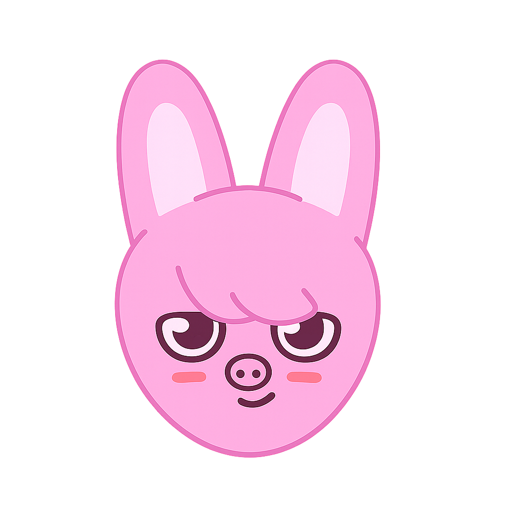

03

STRAY KIDS
Changbin
チャンビン
Main Rapper / ProducerPROFILE
- 本名
- Seo Changbin / 서창빈
- 誕生日
- 1999.08.11
- 出身
- Yongin, Gyeonggi-do, South Korea
- 担当
- Main Rapper / Producer / Songwriter
- Producer Team
- 3RACHA
- SKZOO
- Dwaekki
ABOUT
Stray Kidsのメインラッパーであり、3RACHAのメンバーとして作詞・作曲・プロデュースを担当。力強いラップと高い表現力で、グループのサウンドを支える重要な存在。
ステージでは圧倒的なカリスマ性とエネルギッシュなパフォーマンスを見せる一方、普段は優しく思いやりのある性格。愛嬌たっぷりな一面とのギャップも、多くのSTAYに愛されている魅力のひとつ。
SKZOO

Dwaekki
ChangbinのSKZOOキャラクター。ウサギとブタを組み合わせたユニークなモチーフで、鋭い目つきと丸いほっぺがチャームポイント。ステージで見せる力強さと、普段の愛嬌あふれるギャップを表現したキャラクターとしてSTAYに親しまれている。
RELATED SONGS
HISTORY
誕生
韓国・京畿道龍仁市で誕生。小学校5年生の頃、学校行事でダンスを披露した楽しさからアイドルを志す。
ラップに目覚め、高校生時代に音楽スクールで本格的に学ぶ。
「Show Me The Money 5」
「Show Me The Money 5」に高校生として出演（実力派ラッパーとして注目）。複数の事務所からスカウトを受ける。
JYP Entertainment
JYP Entertainmentの公開ラップオーディションに合格（自作曲ラップで評価）。練習生期間は約2年（比較的短め）。
練習生時代にBang Chan、Hanと出会い、2016年末〜2017年にヒップホップユニット3RACHAを結成（SpearB名義）
自作曲をリリース
SoundCloudで自作曲をリリースし、注目を集める。
JYPサバイバル番組
JYPサバイバル番組『Stray Kids』に参加。プロデューサー兼ラッパーとして活躍。
デビュー
正式デビュー（ミニアルバム『I am NOT』）
Ambassador
Autry（オートリー）
グローバルブランドアンバサダー。
スニーカーやカジュアルウェアを中心としたキャンペーンに参加。チャンビンのスポーティーでエネルギッシュな雰囲気がブランドに合っている。
WHY STAY LOVE HIM
🐷🐰 圧倒的なラップスキル
- 重低音の効いた力強いラップと、圧倒的なスピード感が魅力。激しい楽曲でも言葉一つひとつがはっきり伝わり、Stray Kidsのサウンドを支える存在。
🎵 音楽への情熱
- 3RACHAのメンバーとして数多くの楽曲制作に参加。作詞・作曲・プロデュースまでこなし、自分たちの音楽を届けたいという強い想いを持っている。
❤️ STAY想い
- いつもSTAYへの感謝を忘れず、ライブや配信では温かい言葉で愛情を伝えてくれるチャンビン。「STAYの存在が力になる」と何度も語っており、ファンを大切にする誠実な人柄も、多くの人に愛される理由のひとつ。